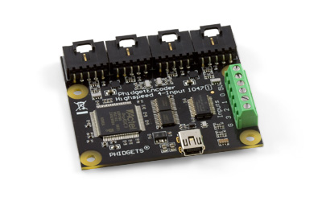
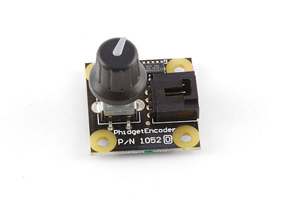
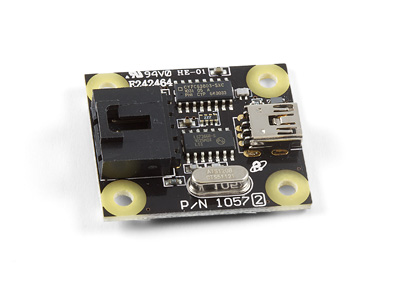
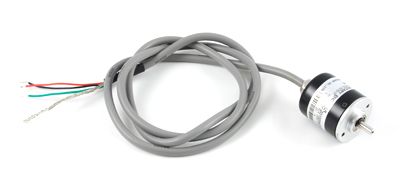
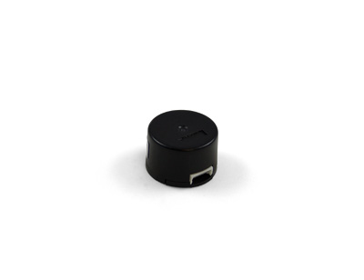
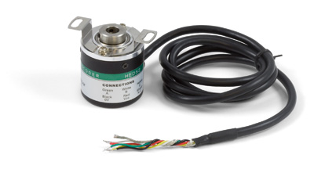

HighSpeed 4-Input Encoder

Product Features
Read up to four encoders simultaneously with this Encoder Interface. You can read limit switches or other simple sensors with the digital inputs.
Product Description
The Highspeed 4-Input Encoder can be used with a wide assortment of mechanical and optical encoders. The encoder should be of quadrature output type, indicating that there will be two quadrature output channels (usually labeled A and B) and an optional third output channel to signal when the index pin (a reference point for zero position or a complete revolution) has been reached.
The Highspeed 4-Input Encoder is able to read four encoders simultaneously. Encoders are not powered up until all initialization of the device is complete. It is possible to enable some or all encoders, depending on how many of the channels are being used. This can also be used to reduce power consumption when certain encoders are not needed.
The Highspeed 4-Input Encoder has the added ability to time the duration between a group of quadrature changes. The time is returned in microseconds. This time value can be used to calculate velocity and acceleration.
Both mechanical and optical encoders are available, with optical encoders dominating at > 100 counts per second. Review the data sheet for the encoder you are planning to use to ensure it is compatible with the Highspeed 4-Input Encoder. Almost any incremental quadrature encoder will work but it is important to verify this before connecting it to the Phidget. Absolute encoders will not work with this device. Ideally, you should choose a quadrature encoder with a 5-pin output and the following pinout in order to be directly compatible with the 1047.
This particular revision of the 1047 has improved power switches to enhance system stability when turning off and on separate encoder inputs. It also has updated firmware with a few minor bug fixes.
Human Control Encoder

Product Features
This encoder can be used as a control dial for user input. The centre of the dial is a pushbutton and it connects directly to USB with the included cable.
Product Description
This encoder can be used as a control dial for user input. The centre of the dial is a pushbutton and it connects directly to USB with the included cable.
HighSpeed 1-Input Encoder

Product Features
Read one encoder at speeds of up to 500,000 quadrature cycles per second. Connects directly to USB.
Product Description
The PhidgetEncoder HighSpeed connects to any typical two-bit optical encoder and can return up to 2,000,000 pulses (that is, 500,000 full quadrature cycles) per second. Specifically it reads a standard incremental non-differential TTL encoder.
The 1057 can be used to measure shaft speed or as a very accurate human input device. If you just need a simple human input device have a look at the Human Control Encoder.
With it you can:
Detect changes in incremental position
Easily track changes with respect to time
Optical Rotary Encoder

Product Features
This encoder can measure rotation at speeds of up to 3000 RPM and plugs into a Phidgets Encoder Interface.
Product Description
This is a small ball bearing construction, rotary encoder without index that goes up to 3000 rpm.
The encoder comes with a 1 meter cable and 2 mounting screws.
OnMotor Optical Rotary Encoder

Product Features
This low-cost encoder is designed to fit on the rear shaft of our stepper motors. Measure the rotation of your motor even when it stalls or missteps.
Product Description
This compact, economical optical quadrature encoder can be attached to the 4mm rear shaft of a motor. It has 300 counts (full quadrature cycles) per rotation and can be installed by fitting it over the shaft, mounting it to the back of the motor, and tightening the set-screw. For complete assembly instructions, take a look at the User Guide. This encoder does not support the use of an index channel.
Contents
The mounting holes on the HKT22 encoder line up with the holes on the back of any rear-shaft stepper motor
Hollow Shaft Optical Encoder

Product Features
Ideal for use with motors, this hollow-shaft encoder fits easily onto an 8mm shaft. The index channel makes it easier to find the orientation of the motor on startup.
Product Description
This sturdy optical quadrature encoder can be attached to the 8mm rear shaft of a motor without need for a shaft coupler. It has 360 counts (full quadrature cycles) per rotation and can be installed easily by fitting it over the shaft and tightening the set-screw. This encoder makes use of the index channel, sending one pulse for every full rotation.
We Provide:
- To be accessible, friendly, and helpful at all times.
- To answer the phone when you call, 24/7/365.
- Reply to your emails and support tickets within 24 hours.
- To provide timely information about new hardware.
- To provide all design documentations.
Please fulfill following request form to get more information!